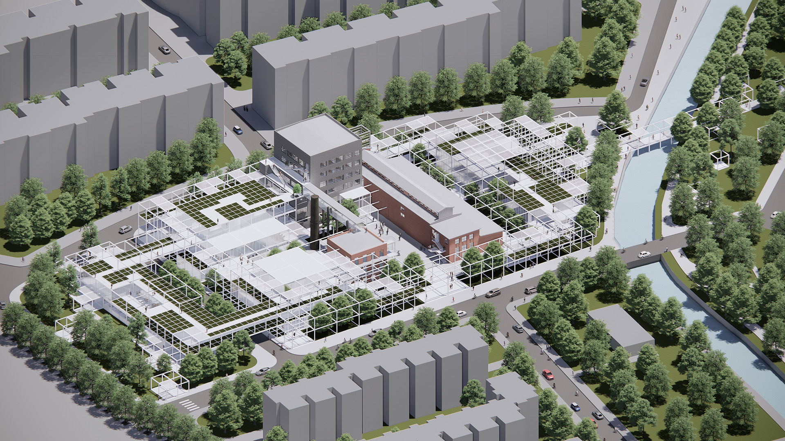
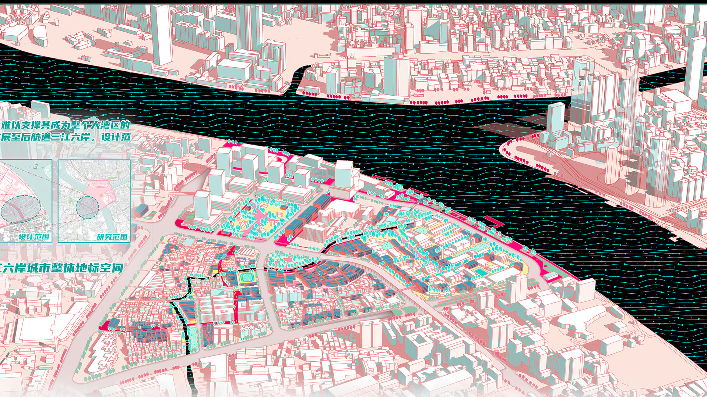
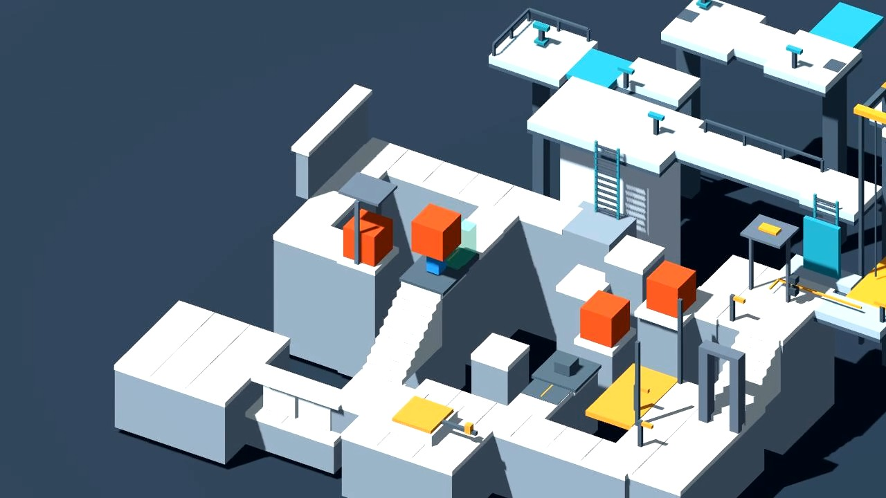
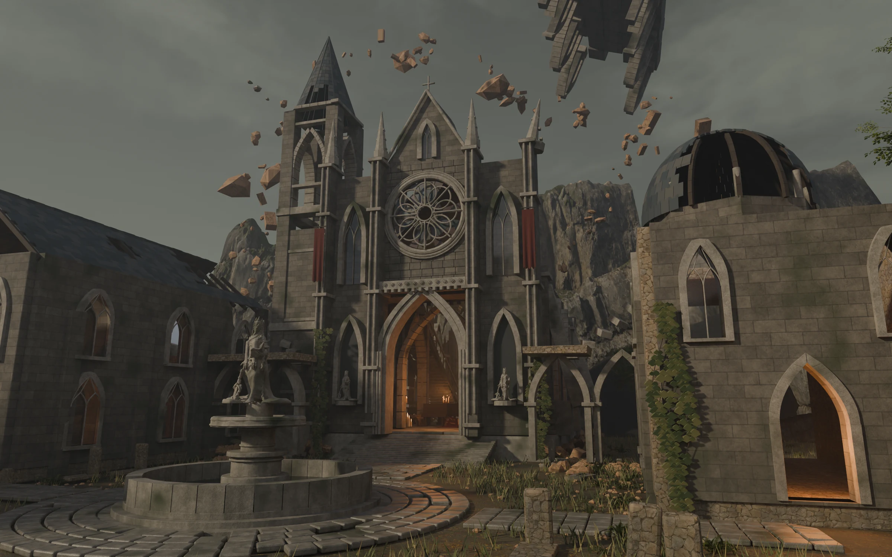
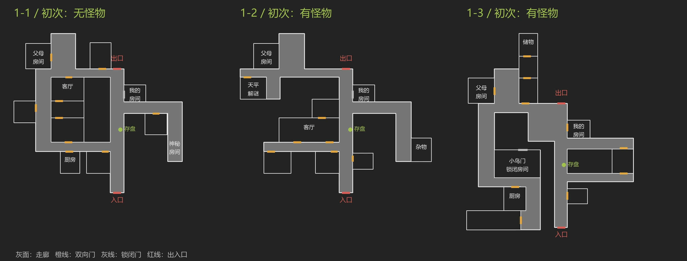
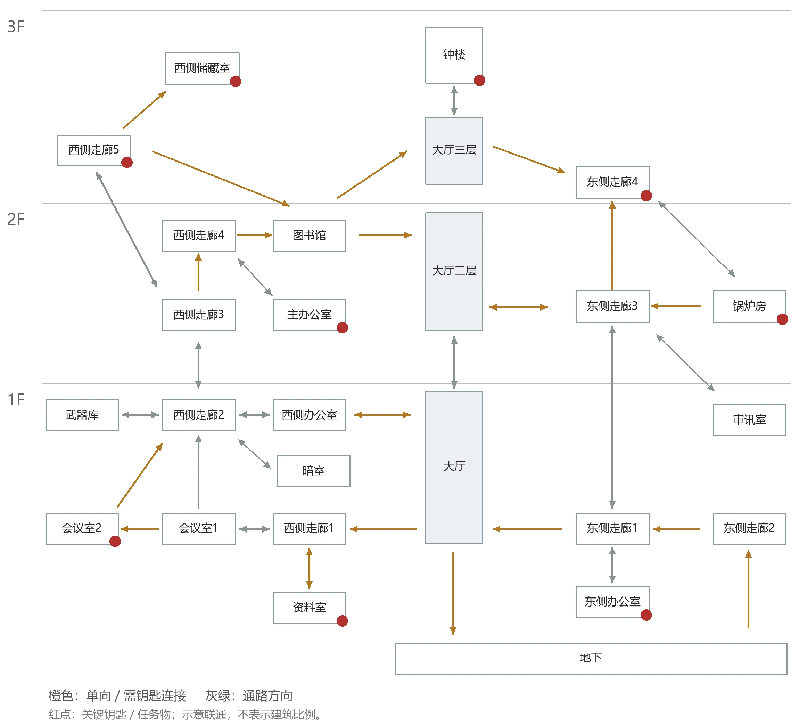

Urban Design · Game Environments · Spatial Experience
Translating real-world spatial logic into immersive interactive worlds.
Featured

Industrial Building Regeneration
Adaptive reuse & urban renewal strategy

Urban Cultural Center
Public space & civic architecture design
Game & Level Design

Gameplay Demo Validation
Puzzle mechanics · route design · prototype validation

Ashen Chapel
Gothic environment scene study · Blender

Silent Hill f · Shimizu Residence
Level breakdown · Cyclical space and task structure

Resident Evil 2 · Raccoon Police Station
Level breakdown · Hub loops, lock-and-key design and pursuit
Urban Research
Conservation
Other Works
About
Education
2019.08 - 2023.06
Tsinghua University · Architecture
2024.08 - Present
Tsinghua University · Urban Planning
Focus
Urban Heritage Conservation & Regeneration
Academic Performance
GPA: 4.0 / 4.0
Rank: 1 / 104 (School of Architecture)
Skills
Blender · Rhino · SketchUp · UE5 (basic)
Adobe PS / AI / ID · Microsoft Office · Unity · Godot
Strengths
Bridging architectural design and game environments, with a focus on spatial storytelling, scene composition, and immersive experience.
Contact
1259400754@qq.com